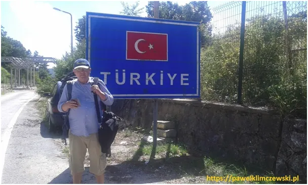
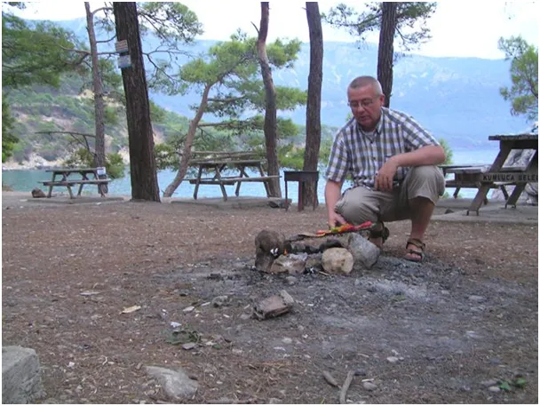
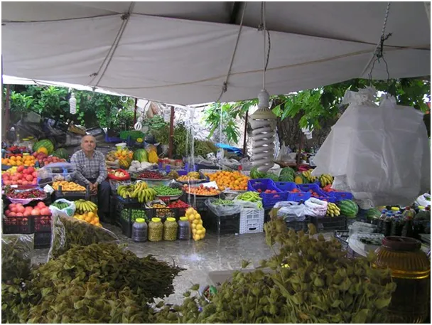
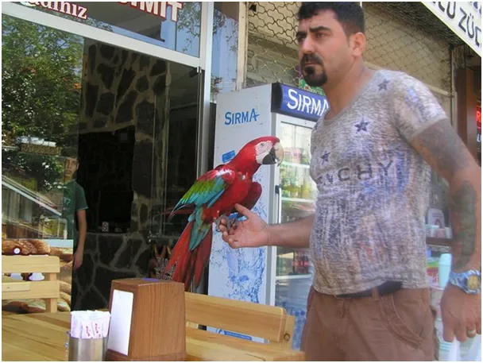

My tu pilnujemy granic a UE się dopiero rozkręca.
Unia Europejska wprowadza pewne ułatwienia dla obywateli Turcji podróżujących do krajów strefy Schengen. Chodzi o wprowadzenie Europejskiego Systemu Informacji o Podróżach i Zezwoleń (ETIAS), który ma na celu uproszczenie procedur wjazdu dla osób zwolnionych z obowiązku wizowego, w tym obywateli Turcji. Znacznie zostaną wydłużone wizy dla Turków nawet do 5 lat.
Spodziewałem się tego już rok temu, bo niemiecka gospodarka zdycha karmiąc dziesiątki milionów "europejczyków na socialu". Podobnie po Drugiej Wojnie Światowej Niemcy ściągnęły miliony Turków do odbudowy kraju, a teraz UE po wojnie ze swoimi obywatelami potrzebuje dobrych, zdrowych psychicznie pracowników. Turcy nie są Arabami, czyli Semitami, wywodzą się z ludów północnej Azji, blisko spokrewnionych ze Słowianami, a ich kultura jest mieszanką kultur: perskiej, bizantyjskiej (greckiej), arabskiej i oczywiście tureckiej. Kontynentalna cywilizacja turańska pozostawiła u Turków bardzo wysoki autorytet władzy, jednak ci dawni koczownicy zdobywając 1000 lat temu Anatolię stali się żeglarzami i handlarzami na wzór Greków. Tureckie piosenki znad Morza Egejskiego brzmią jak greckie melodie i gdyby nie narzucany światu szał nacjonalizmu w XIX wieku, Grecy żyliby zgodni z Turkami po sąsiedzku jak to miało miejsce 500 lat wcześniej, już po zdobyciu Konstantynopola.

Miałem pewne polityczne intuicje, gdy 10 lat temu zapisałem się do pierwszej klasy tureckiej szkoły dla dorosłych w Warszawie. Dzięki temu mam gratis jedno życie więcej, gdy uda mi się wyskoczyć z europejskiego Matrixu do normalnego świata i rozpalić legalnie grilla nad morzem w suchym lesie.

Tam letni deszcz rozwesela wszystkie twarze, w tym sprzedawcy na bazarze, bo myje owoce i zwalnia z potrzeby zwilżania towaru wodą. Turcja oferuje tanią energię, wysokie technologie, dobre relacje ze wszystkimi mocarstwami, tanią siłę roboczą, jest jednym z niewielu na świecie państw samowystarczalnych, rozwija program kosmiczny, sama produkuje i sprzedaje satelity i samoloty 5. generacji. W Polskiej prasie to zacofana dyktatura, dlatego mogłem tam w "kowidzie" przeczekać bez maseczki nasze kwarantanny.
Do tureckiej granicy w lipcu dotarłem dosłownie pieszo, bo w Bułgarii (UE) "kowid" wyłączył cały transport publiczny. Dalej już dobrzy ludzie zadbali o mnie i za kilkadziesiąt złotych przejechałem 600 km łącznie z morską przeprawą z Europy Do Azji w okolicach antycznej Troi.

P.s. Kiedyś w zaprzyjaźnionej tureckiej knajpce w Warszawie jakieś ruskie/ukraińskie nastolatki przy stole czesały sobie ostentacyjnie, nawzajem, szczotką długie włosy. Przegoniłem to towarzystwo do łazienki, panny nie wiedziały dlaczego. Potem Turek przy kebabie, z sympatycznym uśmiechem pokazał mi gest cięcie szablą długim nożem do odcinania mięsa. Doskonale się rozumieliśmy w tureckiej kulturze nawet wytarcie nosa przy stole jest nieprzyzwoite. Potem rozmawialiśmy jeszcze chwilę po turecku, zrozumiałem, że u nich nie przejdzie sowieckie chamstwo. Najgroźniej wyglądający Turek jakiego spotkałem miał ze sobą obronną papugę...
Paweł Klimczewski
Tu inne moje teksty o Turcji : https://pawelklimczewski.pl/?s=turcja
Pod linkiem turecka piosenka w tonacji Morza Egejskiego https://www.youtube.com/watch?v=HXR2aAdvtws